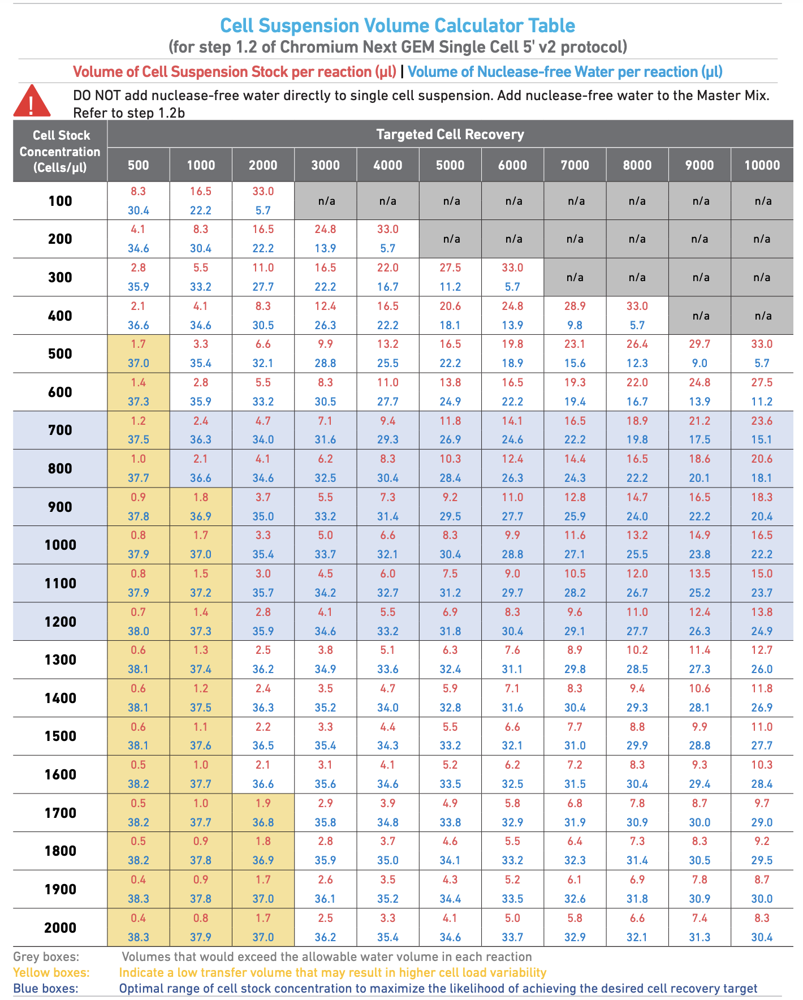
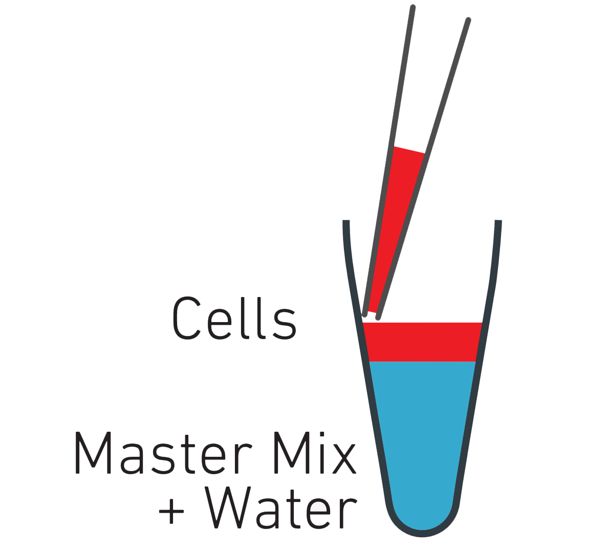
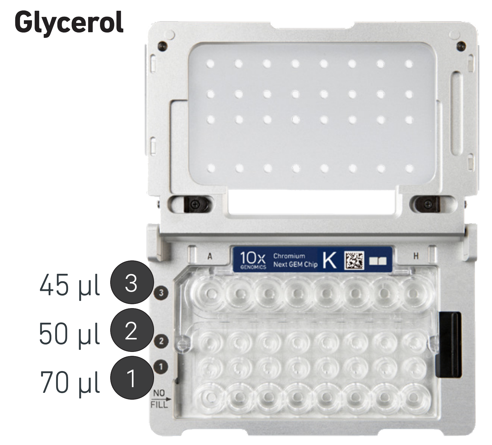

Cell preparation: Thawing cells (Demuxlet protocol)
This article provides details on the chemical analysis experiment and includes information on the chemicals used.
| Materials | Consumables | Instruments & Equipments | |||
|---|---|---|---|---|---|
| 1. RPMI 1640 Medium, no glutamine Thermo Fisher Catalog #21870076 |  |
1. 50 mL centrifuge tube |  |
1. Sorvall LYNX-6000 Superspeed centrifuge |  |
| 2. Human Serum Sigma Aldrich Catalog #H4522 |  |
2. 15 mL centrifuge tube | |
2. Eppendorf 5810R centrifuge |  |
| 3. Fetal Bovine Serum Sigma Aldrich Catalog #F2442 |  |
3. Serological pipette |  |
3. Pipette gun/PipetteX |  |
| 4. L-Glutamine (200 mM) Gibco - Thermo Fischer Catalog #25030081 |  |
4. 5 mL Eppendorf Tube |  |
4. Countess Automated Cell Counter |  |
| 5. Penicillin-Streptomycin (10,000 U/mL) Thermo Fisher ScientificCatalog #15140122 |  |
5. 1.5 mL Eppendorf Tube |  |
5. Waterbath |  |
| 6. Gibco™ DPBS no calcium no magnesium Thermo Fisher Scientific Catalog #14190144 |  |
6. 0.2 mL PCR Tube |  |
6. Mr.Frosty |  |
| 7. BSA (Capricorn Scientific; Cat. No.: BSA-1S) |  |
7. Filter tips |  |
6. Mr.Frosty | |
| 8. Trypan Blue Solution 0.4% Thermo Fisher Scientific Catalog #15250061 |  |
68. 40 µm cell strainer (FACS tubes) |  |
6. Mr.Frosty | |
| 9. Glycerol |  |
68. 0.4 μM Filter |  |
6. Mr.Frosty | |
Preparation of Reagents and Media
Warm all at  37°C in waterbath
37°C in waterbath
| Reagents | Volume |
|---|---|
| - RPMI | 167.4 mL |
| - 5% Human Serum | 9 mL |
| - 1% Pen/strep | 1.8 mL |
| - 1% glutamine | 1.8 mL |
| Reagents | Volume |
|---|---|
| - RPMI | 88 mL |
| - 10% Fetal Bovine Serum (Heated) | 10 mL |
| - 1% Pen/strep | 1 mL |
| - 1% glutamine | 1 mL |
| Reagents | Volume |
|---|---|
| - D-PBS | 200 mL |
| - BSA | 0.08 g |
Then, filter PBS-0.04% BSA using 0.4 uM filter in HOOD.
| Reagents | Volume |
|---|---|
| - Glycerol | 5 mL |
| - Nuclease Free Water (NFW) | 5 mL |
Then, filter in HOOD.
Thawing and Preparation
-
Add
 9 mL of thawing media at
9 mL of thawing media at  37°C into a 15 mL Falcon tube. (Prepare 16 tubes)
37°C into a 15 mL Falcon tube. (Prepare 16 tubes)
-
Transfer 16 tubes of PBMCs to a 37°C water bath and thaw for
 1-2 mins (depends on volume in cryotube). (Thaw 1-2 tubes at a time)
1-2 mins (depends on volume in cryotube). (Thaw 1-2 tubes at a time)
-
After thawing cells, open the cryotube under the laminar hood and add 1 mL of warmed thawing media dropwise, using wide-bore blue tips.
-
Gently transfer the entire cell suspension (cells with 1 mL thawing media from step 3) into the 15 mL Falcon tube containing 9 mL of warmed thawing media wide-bore blue tips.
 NOTE: Add the suspension gently, either dropwise or while keeping the tube at a 45° angle.
NOTE: Add the suspension gently, either dropwise or while keeping the tube at a 45° angle.
-
Mix the solution extremely gently by pipetting (3-4 times) using wide-bore blue tips, avoiding any bubbling.
NOTE: Cells at this stage are very fragile!
-
Centrifuge at
 300 g for 5 mins and discard the supernatant.
300 g for 5 mins and discard the supernatant.
-
1st wash: Resuspend the cell pellet in 5 mL of warmed thawing media by pipetting (5-10 times) gently using wide-bore blue tips.
-
Centrifuge at 300 g for 5 mins and discard the supernatant.
-
2nd wash: Resuspend the cell pellet in 3 mL of PBS + 0.04% BSA.
-
Centrifuge at 300 g for 5 mins and discard the supernatant.
-
3rd wash: Resuspend the cell pellet in 3 mL of PBS + 0.04% BSA.
- Filter the cells through a 40 µm cell strainer (FACS tubes) to remove clumps or debris.
-
Aliquot 15 µL of cells + 15 µL of Trypan blue and count using Countess II.
NOTE: Cells are kept on ICE during cell count!
ICE during cell count!
-
Calculate and make aliquots of 1.2×106 cells/mL for each sample ( ~500 µL; depends on cell concentration).
NOTE: If number of live cells > 1.2×106/mL, add cells and PBS+0.04% BSA following the table below.
If number of live cells < 1.2×106/mL, centrifuge cell suspension at 300 g for 5 mins, discard the supernatant, add PBS+0.04% BSA following the table below and resuspend the cell pellet. After that, add cells and PBS+0.04% BSA following the table below.
-
Mix 100 µL of each 1.2×106 cells/mL. The total volume should be 1.6 mL of 1.2×106 cells/mL.
- Count pooled cells again. Cell concentration shoulde be 1.2×106 cells/mL.
-
Keep leftover cells of individuals in 4°C before DNA extraction on the same day.
When ready!!
** Thaw Gel beads from -80°C freezer for at least  30 mins, thaw 10x reagents, open PCR and open Chromium X
30 mins, thaw 10x reagents, open PCR and open Chromium X
| Sample ID | Number of Live cells
(106 cells/mL) |
Volume (mL) | Total 106 cells | Needed 106 cells/mL | Add PBS+0.04% BSA (µL) | Dilute cells to 1.2x106
cells volume (µL) |
Dilute cells to 1.2x106
PBS+0.04% BSA volume (µL) |
Total volume (µL) | diluted cells volume (µL) used | % Cell viability | Volume of 1.2x106 cells in total volume |
|---|---|---|---|---|---|---|---|---|---|---|---|
| Sample 1 | 1.65 | 0.500 | 0.825 | 1.2 | 145.5 | 54.5 | 200 | 100 | 91 | 0.69 | |
| Sample 2 | 1.4 | 0.200 | 0.280 | 1.2 | 171.4 | 28.6 | 200 | 100 | 85 | 0.23 | |
| Sample 3 | 1.09 | 0.200 | 0.218 | 1.2 | 181.7 | 110.09 | 79 | 0.18 | |||
| Sample 4 | 1.27 | 0.500 | 0.635 | 1.2 | 189 | 11 | 200 | 100 | 86 | 0.53 |
Single-cell Experiment
Collected PBMC viability > 75%
- Prepare 10X reagents from Chromium Single Cell 5' Reagent Kits User Guide (v2 Chemistry Dual Index)
-
Take 33.3 µL of the pooled cell suspension with 5.4 µL of NFW for further processing of single-cell capturing using Chromium X. Loading 40,000 cells with targeted recovery of 23,000 cells.
NOTE: Refer to the table below for the corresponding number of loaded cells.
 -
Add 5.4 µL of NFW in 36.3 µL of GEM master mix before add 33.3 µL of cell suspension.
 33.3 μL of Cell suspension
36.3 μL of GEM Master mix +
5.4 μL of NFW NOTE: Volume of each reagents depend on number of needed cells.
-
Add Glycerol in unused wells.
